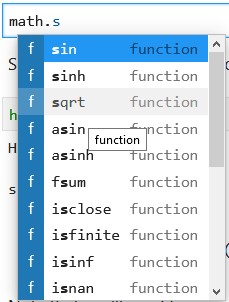

Loading and using modules#
In this section we provide some additional background on loading and using modules in Python. Modules are actually not much different from the Python script files produced in the previous section, and there are many Python modules that are freely available. This is one of the best things about using Python; you can find modules to do many common programming tasks in Python!
Modules, packages and libraries?#
A Python module [1] refers to a piece of Python code that is designed to execute a specific task. Technically, modules are simply Python script files (with the file extension .py) that contain function definitions and other statements. Python packages [2] are a way of organizing modules into larger entities.
Modules and packages are similar to what are more generally called libraries in programming languages, which again contain code related to specific tasks such as mathematical operations. There are a huge number of Python modules/packages, and many of them greatly extend what can be done in a normal Python program. In fact, the abundance of free Python modules is one of the best reasons to learn and start using Python.
The words “module”, “package” and “library” are often used interchangeably.
Loading modules#
Python modules can be loaded in a number of different ways.
Let’s start simple with the math module. Here, we can load the math module using the import statement and then we are able to explore some of the functions in the module, such as the square root function sqrt.
import math
math.sqrt(81)
9.0
Here we have loaded the math module by typing import math, which tells Python to read in the functions in the math module and make them available for use. In this example, we see that we can use a function within the math library by typing the name of the module first, a period, and then the name of function we would like to use afterward (e.g., math.sqrt()).
Built-in functions#
Built-in functions [3] such as print() are always available without importing anything.
print("Hello world!")
Hello world!
Technically, the built-in functions belong to a module called builtins.
Renaming imported modules#
We can also rename modules when they are imported, which can be helpful when using modules with longer names. Let’s import the math module, but rename it to m using the format import module as name. Then we can using the sqrt function from the math library and check the type of our module named m.
import math as m
m.sqrt(49)
7.0
type(m)
module
Here, we imported the math module with the name m instead of math. We will see other examples later in the first part of this book where using an alternate name is rather useful. For example, in the next chapter we will start using the pandas library for data analysis. It is customary to import pandas as pd.
import pandas as pd
Importing a single function#
It is also possible to import only a single function from a module, rather than the entire module. This is sometimes useful when needing only a small piece of a large module. We can do this using the form from module import function. Let’s import the sqrt function from the math module using this approach. Again, we can test using our results by using the function afterwards.
from math import sqrt
sqrt(121)
11.0
Though this can be useful, it has two major drawbacks: (1) the imported function could conflict with other built-in or imported function names, and (2) you lose the information about which module contains the imported function. Thus, you should only do this when you truly need to.
Importing a submodule#
Some modules have submodules that can also be imported without importing the entire module. We will see examples of this in later chapters in this book when making data plots using the pyplot submodule from the Matplotlib module [4]. In case you’re already curious, here is an example.
import matplotlib.pyplot as plt
Matplotlib is building the font cache; this may take a moment.
# Plot a simple x y line graph with the default plot settings
plt.plot([1, 2, 3, 4, 5], [5, 2, 3, 4, 1])
[<matplotlib.lines.Line2D at 0x143671730>]
Figure 2.9. Example plot using the Matplotlib module.
You can read more about the plot plotting function in the Matplotlib pyplot documentation [5]. We will introduce Matplotlib in more detail in Chapter 4.
Checking available functions and modules#
As we saw above, the easiest way to use a module is to import it an then use its functions by typing modulename.functionname() and providing the necessary arguments. Yes, it is that simple.
However, there are times that you may not know the names of all of the functions in a module, or which are part of a given module. You can view the list of functions that are part of a module using the dir() function.
In [1]: dir(math)
['__doc__',
'__file__',
'__loader__',
'__name__',
'__package__',
'__spec__',
'acos',
'acosh',
... (output truncated)
In Jupyter notebooks you can also browse the available modules by typing in modulename. and then pressing the tab key:

Figure 2.10. Listing functions in the math module in JupyterLab.
This may be quite helpful, but what about when you don’t know what a given function does? The easiest solution is to use the help() function (after importing the module). Let’s have a look at the help() function output for the math.sin() function. Note that we do not include the parentheses for the target function when using the help() function.
help(math.sin)
Help on built-in function sin in module math:
sin(x, /)
Return the sine of x (measured in radians).
Another possible issue is that you may not know which modules are available for use in your Python environment. In this case you can type help("modules") to see the complete list of installed Python packages. Be aware that although this works, the output can be a bit clumsy and hard to read. In addition, note that you may first see several warnings related to deprecated packages, etc. when running this command.
In [13]: help("modules")
Please wait a moment while I gather a list of all available modules...
(Some warning messages may appear here)
Cython click lib2to3 rioxarray
IPython click_completion libmambapy rlcompleter
OpenSSL click_log libpysal rtree
PIL click_plugins linecache runpy
__future__ cligj linkify_it rvlib
... (output truncated)
Best practices for using modules#
Finally, here are a few tips for using modules in your Python programs:
Import modules at the start of your files. The PEP 8 [6] guidelines recommend always importing modules at the top of a script file (and the same can be applied to a Jupyter notebook.
Avoid importing functions using wildcards. It is best not to import all functions from a module using the form
from X import *(whereXis a Python module) due to losing connections between the function and module it is sourced from.Choose logical names when renaming on import. It is preferable to use standard names (e.g.,
import pandas as pd) or select logical shorter names (e.g.,import matplotlib as mpl) when renaming on import.Pay attention to possible name conflicts. When renaming imported modules or importing functions from modules, be careful that the names do not conflict with built-in Python functions (e.g.,
import matplotlib as mapwould conflict with the built-in Python functionmap()).
Additional examples of best practices for using modules can be found in Appendix A.2.